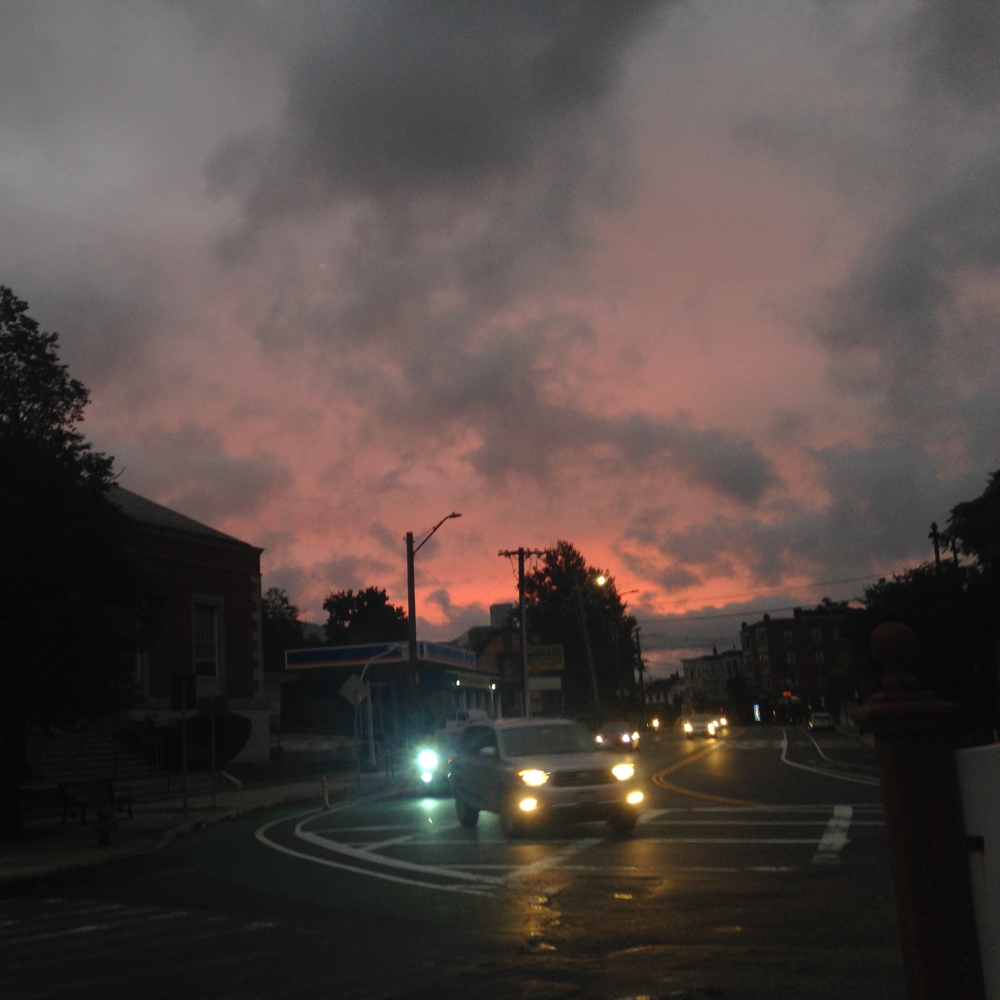
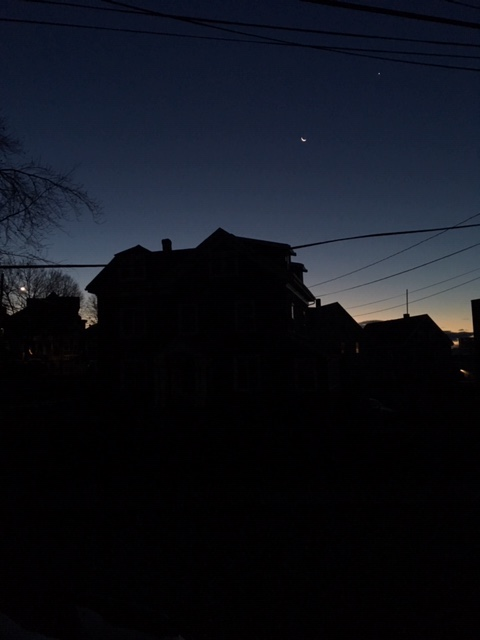
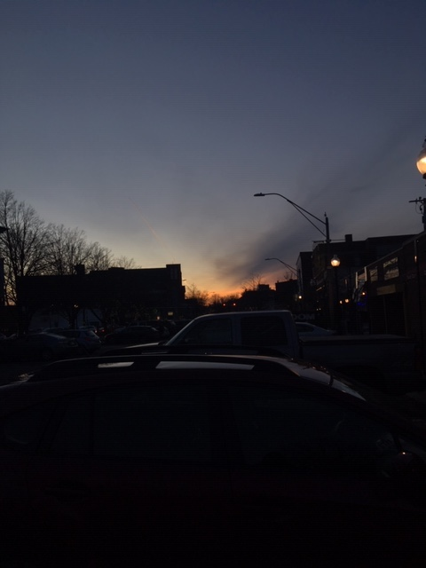

Hi I'm Emi. I go to the Commonwealth School, near Copley. I live in Union Square, Somerville.
Since face fabric face masks became an important part of protecting against covid, I have been
working to develop and produce quality face masks. Initially, these face masks were only for family,
close friends, and donation to Cambridge Health Alliance (CHA), but since the start of summer, I have
been expanding my business, and currently I sell face masks in addition to donating and gifting.
Specifications for face masks that hold true unless otherwise specified:
Face masks are made with two layers of 100% cotton material. They have a slit so that one can choose to
insert a filter, which is more necessary in some masks than others, depending on the thickness and quality
of the cotton. Most masks are made with elastic that goes through channels on the sides and around the back
of the head, ensuring a "one size fits all" that really does fit almost everyone.
I generally sell masks for $10 each, but I gratefully accept extra donations.
Furthermore, I am happy for the face mask payment to be made to CHA, or another local charity, just please
let me know that that's what you are doing.
I take payment by cash, check (I think?), and Venmo.
If you live within a 5 mile radius of Union Square, Somerville, I deliver masks by bike. Otherwise, I have
discovered that a singular mask ships for the same price as a letter.
Note on timing and availability:
I am mostly working by myself, in batches of 2 to 20 masks of a single pattern at a time. Some fabrics come from
small donations, and as such have limited availability. Some masks come from a batch that hasn't been started yet
and as such may take a long time to be ready. A mask pattern that you like may not still be available by the time
you ask for it as in-person requests can take precedence.
Note on exceptions and alterations
I take special requests. If they are interesting enough, I do not require payment. I also am usually willing to
take a fabric of your choice and transform it into masks for you. I also accept donations of labor, food, materials,
or other forms of bartering in liu of payment.
If you would like a mask that in any way deviates from the specifications laid out at the beginning of this long spiel,
please let me know.
I also make pro bono masks, sometimes. If you know a group of people who would strongly benefit from machine washable face masks and don't
already have a plan to get some, please let me know. My personal limit for this is ~20 masks, but if it's really important, I might be
able to get help from the rest of the sewing group. This pro bono work includes making face masks for eployees (and possibly their volunteers)
of local businesses that are suffering due to covid.
Contact:
Please email me at endlessneuwalder@gmail.com if you would like to purchase face mask(s). If you have another way of getting in touch with me, feel free to use that instead!
(Don't use Instagram though, I check my email more)

One morning, the moon seemed really bright against the sky, and I tried to capture it.

For awhile, I was leaving for school quite a bit before sunrise, and the glare of the
street lights against the purple background was quite appealing.

Again, I was fascinated by the contrast of the snow and the lights and the dark pink-purple-blue sky.

On cold, damp, slightly cloudy days, the sky is absolutely georgeous when only lit from behind.

One day, the sky had this beautiful ripple pattern, kind of like sand on a beach (in coloring, too), and I took a ton of pictures.
The bright, glaring yellow of the taxi stood out nicely against the more muted tones of the sky and buildings.

From another view point, I could capture more of the sky, without the taxi.

The sky is cut into vertical strips of color against the darker poles and building.

In capturing the annoyance of a flooded street (which I then had to cross to get to
the bus stop), I also caught a very clear reflection of the trees and buildings on the other side.

Bus and train windows also provide an interesting opportunity for a partial reflection that gives
the appearance of two images on top of each other.

At another green line stop, I captured the sky and all the wires going across.

This sign is apparently a green line relic from long ago when they had food. I found it
interesting and the lighting appealing.

One day on the way home from school, I discovered the gate at Copley wide open and thought
to document it for posterity. The composition turned out well too, I think.

I love to take pictures of sunsets. Most of the time I'm on the train though, so I have to take
the pictures through the windows. This yields interesting results.

One time, I did successfully capture the sunset without a window, and the sky looked streaky,
almost as if it were painted.